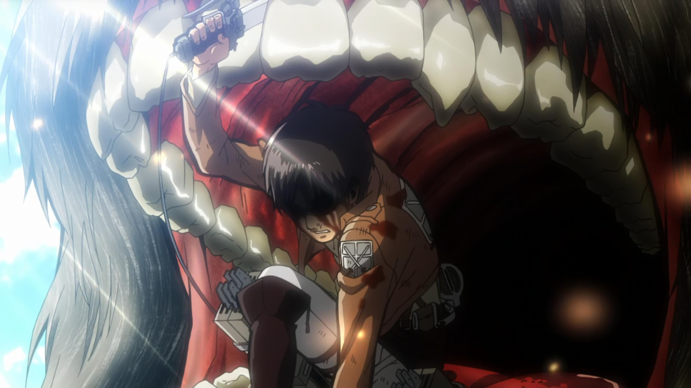

ARC 03
Battle of Trost
Humanity's first stand against despair.

Overview
The Battle of Trost District takes place immediately after the fall of Shiganshina, as Eren Yeager, Mikasa Ackerman, Armin Arlert, and the other members of the 104th Cadet Corps face their first major battle against the Titans. When the Colossal Titan appears once again, it breaches the outer gate of Trost District, allowing numerous Titans to enter the city. The newly graduated cadets are forced to fight for their lives, but the situation quickly becomes desperate as humanity suffers heavy casualties.
The battle takes an unexpected turn when a mysterious Titan begins fighting against other Titans. As the survivors struggle to understand this phenomenon, Eren's unusual abilities become central to humanity's attempt to reclaim Trost and discover a possible way to fight back against their enemies.
Arc Information
| Anime | Attack on Titan |
|---|---|
| Season | Season 1 |
| Episodes | Episodes 5 – 13 (9 episodes) |
| Release Date | May 5 – June 30, 2013 |
| Manga Chapters | Chapters 3 – 14 |
| Main Location | Trost District |